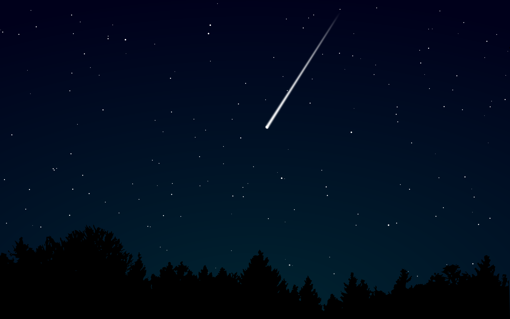

SVG

shootingstar.svg
About This Image
This is a night sky illustration showing a bright shooting star streaking diagonally across the sky. The bottom of the image has a dark silhouette of pine trees. The sky is a deep dark blue with lots of tiny white stars scattered all around.
Why I Chose This Image
I chose this image because it shows what SVG is good at. The sky is a smooth gradient going from dark black at the top to deep blue in the middle. The pine trees at the bottom are silhouette shapes. The shooting star is a bright diagonal line with a glowing trail. SVG can describe all of these using shapes and gradients in code, so the image stays sharp at any size.